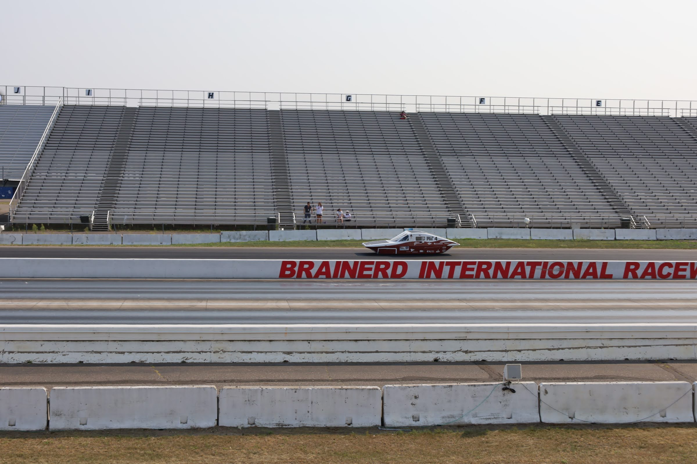
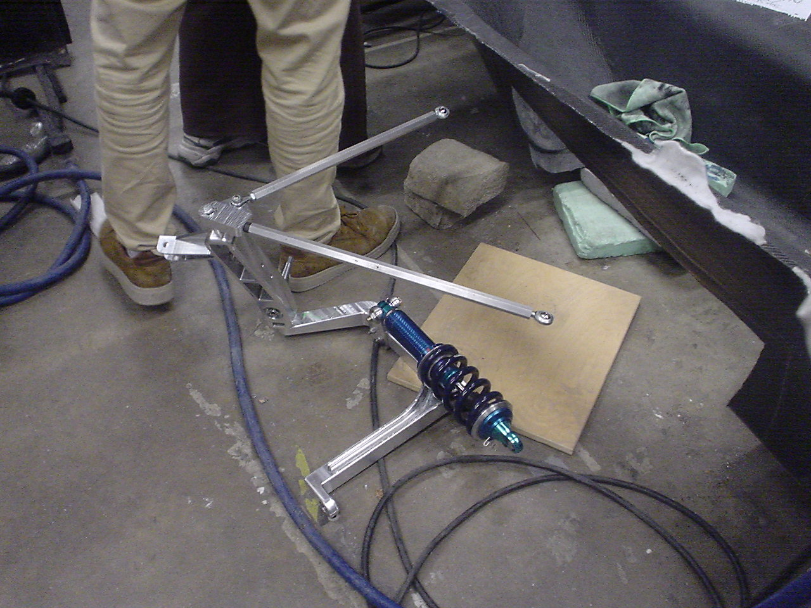
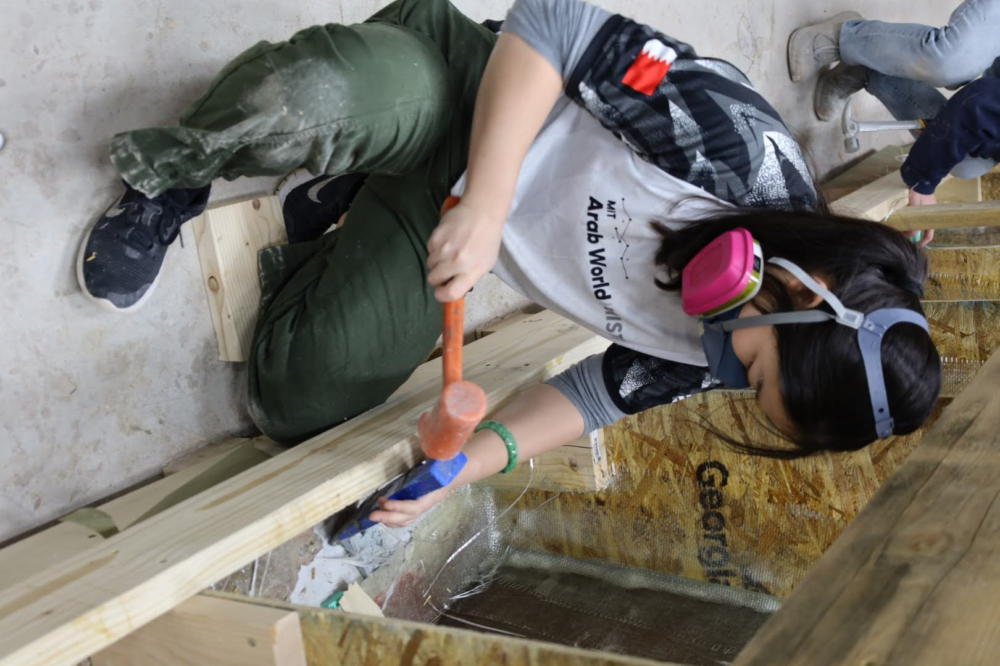

01 / MIT SOLAR ELECTRIC VEHICLE TEAM
Building a solar
race car from CAD to track.
Three years of mechanical engineering, composite fabrication, manufacturing, and team leadership on MIT's Solar Electric Vehicle Team.
01 / Overview
From subsystem engineer to team captain.
I joined MIT's Solar Electric Vehicle Team in 2023 as a Brakes & Pedals engineer on Gemini. I moved to Front Suspension for Solstice the following year, became Vice Captain during the design phase, and served as Captain through manufacturing and competition.
My work has ranged from suspension design and FEA to carbon fiber fabrication, chassis and aeroshell layups, machining, assembly, and solving whatever mechanical problems needed to be solved to get the car on the road.
02 / Progression
Growing with
the car.
03 / Solstice
Front Suspension
Designing a lightweight suspension system that could survive real road loads while fitting within the constraints of a solar race car.

Design
Suspension architecture
Developed the front suspension geometry and mechanical components as part of Solstice's vehicle design.
Analysis
FEA-driven iteration
Used ANSYS to evaluate stresses and identify critical regions of the suspension under simulated loading.


Engineering
Strength vs. weight
Every component had to balance structural requirements against the extreme weight sensitivity of a solar race car.
Manufacturing
From model to hardware
The suspension was developed with fabrication, machining, assembly, and serviceability in mind.

Machined aluminum suspension hardware.
04 / Gemini
Brakes & Pedals
Before moving to Solstice, I worked on the brakes and pedal system for Gemini, taking components from mechanical design through fabrication and assembly.

Pedal system CAD.

Brake rotor design.

Brake rotor after waterjet manufacturing.

Brake system assembly.
Design
Mechanical systems
Designed braking and pedal components in CAD with attention to geometry, interfaces, packaging, and manufacturability.
Fabrication
Design → hardware
Took the designs into fabrication and hands-on assembly, turning digital models into race-ready mechanical hardware.
05 / Composites
Building the body.
My work on Solstice also extended into composite manufacturing. I helped fabricate the chassis and aeroshell through hands-on carbon fiber layup, demolding, finishing, and assembly.





Chassis
Carbon fiber layup
Helped fabricate structural composite components that form the foundation of the vehicle.
Aeroshell
Large-scale composites
Worked hands-on through the fabrication of the aerodynamic shell that forms the outer body of Solstice.
06 / Leadership
From building the car
to leading the team.
As Vice Captain, I helped guide Solstice through its design phase. As Captain, I led the team through manufacturing and the final push toward competition. The role meant balancing engineering decisions with people, schedules, suppliers, manufacturing constraints, and the thousands of details required to turn a design into a working car.

07 / Takeaway
I like engineering that
has to work in the real world.
SEVT has taught me how to take an idea from a CAD model through analysis, manufacturing, assembly, testing, and ultimately onto the road — while learning how to build alongside and lead a team.